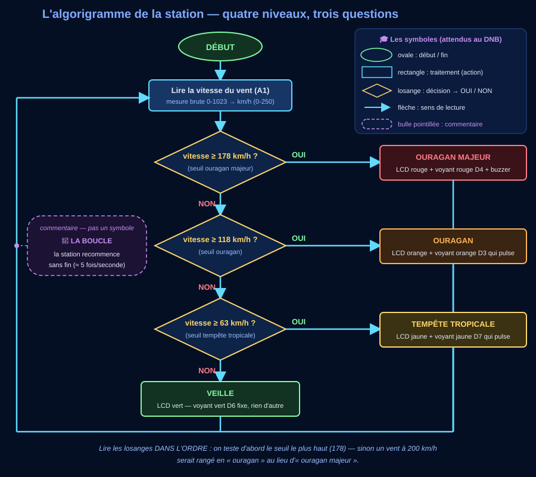

📞 Séance 1 — « La mairie vous appelle » : du besoin à l'algorithme
Question directrice : que doit décider le programme, à partir de quoi, et dans quel ordre ?
Relire le cahier des charges — et poser les deux chaînes
⏱ ~30 min![Schéma des deux chaînes de la station : en haut la chaîne d'information (Acquérir avec l'anémomètre A1 et le bouton D2, Traiter avec le microcontrôleur et les seuils 63, 118 et 178 km/h, Communiquer avec le LCD, les quatre voyants et le buzzer), en bas la chaîne d'énergie (Alimenter par USB 5 V, Distribuer par le shield, Convertir en lumière et en son, et un bloc Transmettre dessiné en pointillés parce qu'il est absent de cette station), et entre les deux la flèche d'ordre qui descend du bloc Traiter et vient se poser sur le bloc Convertir](Images/chaine_info_energie_station.svg)
📖 Description détaillée du schéma des deux chaînes
En haut, la chaîne d'information. Deux entrées à gauche : le vent, grandeur physique lue par l'anémomètre simulé sur A1 (signal analogique 0-5 V) ; et l'appui de l'agent sur le bouton d'acquittement D2 (signal logique 0 / 1). Toutes deux arrivent au bloc ACQUÉRIR (entrées A1 et D2, convertisseur analogique-numérique 10 bits, 0 à 1023). Une flèche étiquetée « données » mène à TRAITER (microcontrôleur + programme, seuils 63, 118 et 178 km/h, plus la mémoire de l'acquittement). Une flèche étiquetée « décisions » mène à COMMUNIQUER (écran LCD avec le niveau et la vitesse, les quatre voyants, le buzzer), tourné vers l'agent d'accueil.
Entre les deux chaînes, une grande flèche jaune descend de TRAITER et vient se poser précisément sur le bloc CONVERTIR : c'est l'ORDRE. Elle atterrit là parce qu'il n'y a pas de préactionneur dans cette station : la broche du microcontrôleur alimente elle-même le voyant et le buzzer. La commande et la puissance passent par le même fil — ce qui n'est possible que parce que la puissance en jeu est minuscule.
En bas, la chaîne d'énergie, de gauche à droite : ALIMENTER (USB, 5 V, très basse tension) ; DISTRIBUER (le shield Grove répartit le 5 V vers chaque module) ; CONVERTIR (électricité → lumière pour les voyants, électricité → son pour le buzzer). Un quatrième bloc, TRANSMETTRE, est dessiné en pointillés et grisé : il est ABSENT. Transmettre, c'est acheminer un mouvement (engrenage, courroie, axe) — et ici rien ne bouge. Une station qui ouvrirait un volet anticyclonique, elle, en aurait besoin.
🔎 Deux questions que le schéma soulève — et leur réponse complète
1. Pourquoi la flèche d'ORDRE arrive-t-elle sur CONVERTIR, et pas ailleurs ? Dans la plupart des systèmes, elle arrive sur un préactionneur : un relais, un contacteur, un pont en H — l'organe qui reçoit un petit signal de commande et laisse passer une grosse énergie. Notre station n'en a pas : une broche de l'Arduino UNO fournit 20 mA de façon nominale (et ne doit jamais dépasser 40 mA, sous peine de destruction du microcontrôleur — fiche technique officielle), et un voyant se contente justement d'une vingtaine de milliampères. La broche peut donc commander ET alimenter : un seul fil fait les deux.
2. Pourquoi n'y a-t-il pas de fonction TRANSMETTRE ? Parce que rien ne se déplace. Transmettre, c'est acheminer et adapter un mouvement — un réducteur, une courroie, une crémaillère. Notre station allume et sonne : la lumière et le son ne sont pas des mouvements qu'il faut conduire quelque part. Un bloc qui n'a rien à faire ne se dessine pas « pour faire complet » : on montre qu'on l'a cherché, et on dit pourquoi il est absent.
La planche ci-dessous compare trois cas — et c'est en les mettant côte à côte qu'on voit la règle apparaître.
![Trois cas comparés en trois bandes. Cas 1, notre station : la flèche d'ordre part de Traiter et arrive directement sur Convertir, le voyant 5 volts d'environ 20 milliampères, sans préactionneur et sans Transmettre. Cas 2, un gyrophare 12 volts d'environ 1 ampère : la flèche d'ordre arrive sur un relais, appelé préactionneur, alimenté par une alimentation 12 volts séparée, et le gyrophare reste le bloc Convertir ; un avertissement rappelle qu'un ampère vaut cinquante fois les vingt milliampères nominaux d'une broche. Cas 3, un portail anticyclonique : la flèche d'ordre arrive sur un pont en H, puis le moteur convertit l'électricité en rotation, puis un bloc Transmettre — réducteur et crémaillère — achemine et adapte ce mouvement jusqu'au vantail qui se ferme](Images/ordre_preactionneur_trois_cas.svg)
📖 Description détaillée de la planche des trois cas
① Notre station — un voyant 5 V (≈ 20 mA). L'ORDRE part de TRAITER (broche D4) et arrive directement sur CONVERTIR, c'est-à-dire le voyant. La broche fait deux choses à la fois : elle commande et elle alimente. Aucun préactionneur, aucun TRANSMETTRE.
② Un gyrophare 12 V (≈ 1 A). L'ORDRE part de TRAITER et arrive sur un RELAIS — le préactionneur. Le relais est relié d'un côté à une alimentation 12 V séparée, de l'autre au gyrophare, qui reste le bloc CONVERTIR. Brancher le gyrophare en direct détruirait le microcontrôleur : 1 A, c'est 50 fois les 20 mA nominaux et 25 fois le maximum absolu de 40 mA. Le relais ne fabrique pas d'énergie : c'est un interrupteur commandé, il ouvre la porte à celle du 12 V. Toujours pas de TRANSMETTRE : le gyrophare tourne sur lui-même, mais rien n'est acheminé.
③ Un portail anticyclonique. L'ORDRE arrive sur un pont en H (préactionneur qui choisit en plus le sens de rotation), puis CONVERTIR — le moteur transforme l'électricité en mouvement de rotation —, puis enfin TRANSMETTRE : le réducteur et la crémaillère acheminent ce mouvement jusqu'au vantail et l'adaptent (beaucoup de tours rapides et peu de force deviennent un déplacement lent et fort). Le vantail se ferme.
La règle, en une phrase : la flèche d'ORDRE atterrit sur le premier bloc de la chaîne d'énergie qu'elle commande — le convertisseur lui-même quand la puissance est minuscule, le préactionneur dès qu'elle ne l'est plus.
Source de la valeur des broches : fiche technique officielle de l'Arduino UNO Rev3 — « DC Current per I/O Pin : 20 mA », avec la mention qu'un maximum de 40 mA ne doit jamais être dépassé sous peine de dommage permanent du microcontrôleur.
a) Le courrier, ligne à ligne
b) Chaque organe à sa place
c) La nouveauté
🪜 Version étayée — des phrases à compléter
Le niveau attendu est exactement le même qu'avec la consigne libre : ces débuts de phrases retirent l'obstacle de la rédaction, pas l'exigence scientifique. Recopie-les et complète chaque « ____ ».
- Le bouton fait entrer l'information « ____ », produite par ____.
- L'anémomètre, lui, capte une grandeur ____ ; le bouton capte une décision ____.
- C'est ce dialogue machine → humain → machine qu'on appelle ____.
💡 Aide de niveau 1
Comportement = « QUE fait la station ? » ; performance = « à quelle VITESSE, avec quelle précision ? ». Pour b) : cet organe capte-t-il, décide-t-il, diffuse-t-il, ou fournit-il seulement de l'énergie ?
💡💡 Aide de niveau 2
Le bouton est du côté « Acquérir » : il fait ENTRER une information (l'appui) exactement comme l'anémomètre fait entrer le vent. La différence est la SOURCE : l'anémomètre capte le monde physique, le bouton capte une décision humaine. Le LCD, les voyants et le buzzer font SORTIR l'information : « Communiquer ».
✅ Correction complète (à ouvrir après vérification)
a) « moins d'une seconde » → performance · « acquitter d'un appui » → comportement · 63, 118 et 178 km/h → le cahier des charges de la mairie (jamais le hasard : en séance 4, la recette vérifiera CES valeurs-là).
b) potentiomètre → Acquérir · bouton → Acquérir · microcontrôleur → Traiter · LCD → Communiquer · les 4 voyants + buzzer → Communiquer · USB → Alimenter.
c) Justification attendue : le bouton fait entrer l'information « l'agent a pris connaissance de l'alarme », produite par un humain. L'anémomètre capte une grandeur physique (le vent) sans intervention humaine ; le bouton capte une décision humaine. Ce dialogue — la machine alerte, l'humain répond, la machine en tient compte — est l'interaction humain-machine exigée par le programme (3e_C9.2).
Où atterrit cette flèche, exactement ? Sur CONVERTIR ici, parce qu'il n'y a pas de préactionneur : une broche de l'UNO donne 20 mA, et un voyant s'en contente. Avec un gyrophare de 12 V, elle atterrirait sur un relais. Et TRANSMETTRE est absent parce que rien ne se déplace. Les trois cas sont dépliés dans l'encadré 🔎 au-dessus de la consigne.
Recopie les deux chaînes dans ton cahier en respectant cette disposition : c'est elle qu'on te demandera au DNB.
Limite : le bouton pourrait aussi être vu comme une « commande » plutôt qu'un capteur — en 3e, on retient qu'il fait ENTRER une information, donc Acquérir.
De l'algorithme en français à l'algorigramme
⏱ ~35 mina) L'algorithme en français
RÉPÉTER sans fin :
lire la vitesse du vent
SI vitesse ≥ ALORS niveau ← ouragan majeur
SINON SI vitesse ≥ ALORS niveau ← ouragan
SINON SI vitesse ≥ ALORS niveau ← tempête tropicale
SINON niveau ←
afficher le niveau et la vitesse
b) Lire l'algorigramme

📖 Description détaillée de l'algorigramme (utile si l'image est petite, illisible ou absente)
On lit de haut en bas. Un ovale « DÉBUT », puis un rectangle « Lire la vitesse du vent (A1) », qui convertit la mesure brute 0-1023 en km/h de 0 à 250.
Vient ensuite une cascade de trois losanges de décision :
- « vitesse ≥ 178 km/h ? » (seuil ouragan majeur) — si OUI : rectangle OURAGAN MAJEUR, écran rouge, voyant rouge D4, buzzer ;
- sinon « vitesse ≥ 118 km/h ? » (seuil ouragan) — si OUI : rectangle OURAGAN, écran orange, voyant orange D3 qui pulse ;
- sinon « vitesse ≥ 63 km/h ? » (seuil tempête tropicale) — si OUI : rectangle TEMPÊTE TROPICALE, écran jaune, voyant jaune D7 qui pulse ;
si NON au dernier losange : rectangle VEILLE, écran vert, voyant vert D6 fixe, rien d'autre.
Les quatre branches se rejoignent en bas, puis une flèche remonte le long du bord gauche jusqu'au rectangle de lecture : c'est la boucle, la station recommence sans fin, environ cinq fois par seconde.
Une bulle à contour violet en pointillés, rattachée à cette flèche de retour par un trait pointillé, porte la mention « commentaire — pas un symbole » : elle explique la boucle sans faire partie de l'algorigramme.
En haut à droite, un encadré rappelle la légende des symboles attendus au DNB : ovale = début / fin, rectangle = traitement (action), losange = décision à deux sorties OUI / NON, flèche = sens de lecture, bulle pointillée = commentaire.
c) Lire l'algorigramme au millimètre — six questions de plus
Les quatre premières questions t'ont fait suivre un chemin. Ces six-là te font lire les symboles et tester les frontières : c'est exactement le geste demandé au DNB.
💡 Aide de niveau 1
Les deux seuils sont écrits noir sur blanc dans le courrier de la mairie. Pour b) : suis le chemin avec le doigt, losange par losange, en répondant OUI ou NON à chaque question. Pour c) : ne devine pas, compte sur le dessin — les rectangles, les chemins possibles — et relis la légende « 🎓 Les symboles » en haut à droite de l'image.
💡💡 Aide de niveau 2
130 ≥ 178 ? NON → on descend au losange suivant. 130 ≥ 118 ? OUI → ouragan. Maintenant imagine 200 km/h avec les losanges INVERSÉS (63 testé d'abord) : 200 ≥ 63 ? OUI → « tempête tropicale »… et les tests 118 et 178 ne sont jamais atteints. Voilà pourquoi l'ordre compte.
Pour c) : le symbole « ≥ » se lit « supérieur ou égal » — la valeur du seuil est donc DEDANS. Les rectangles se repèrent à leur forme (angles droits) : la lecture du vent en est un, chaque niveau en est un. Une forme en pointillés n'est jamais un symbole d'algorigramme : c'est une note posée à côté du dessin, comme une bulle dans une BD. Et pour compter les chemins : chaque OUI qui sort d'un losange ouvre un chemin, le dernier NON en ouvre un aussi.
✅ Correction complète
a) SI vitesse ≥ 178 → ouragan majeur ; SINON SI vitesse ≥ 118 → ouragan ; SINON SI vitesse ≥ 63 → tempête tropicale ; SINON → veille.
b) 130 km/h → losange 178 : NON → losange 118 : OUI → ouragan. On teste 178 d'abord car un vent à 200 km/h doit finir en ouragan majeur : si on testait 63 d'abord, 200 ≥ 63 serait vrai et le programme s'arrêterait à « tempête tropicale » — un bug dangereux, et d'autant plus qu'il l'est deux fois ici, avec trois seuils au lieu de deux. La flèche qui remonte est la boucle : une station de surveillance ne s'arrête jamais. Le losange est une décision à deux sorties OUI/NON.
c) Lecture fine — les six réponses.
178 km/h pile → ouragan majeur : « ≥ » se lit « supérieur OU ÉGAL », la valeur du seuil appartient au niveau du dessus. Avec trois seuils, cela fait six frontières à tester — 62/63, 117/118, 177/178 — et tu les retrouveras toutes en séance 4.
5 rectangles : la lecture du vent, puis OURAGAN MAJEUR, OURAGAN, TEMPÊTE TROPICALE et VEILLE ; les losanges ne sont pas des traitements, ils ne font rien, ils demandent.
La bulle violette en pointillés est un commentaire : elle explique le dessin, elle n'en fait pas partie. Repère infaillible : elle est en pointillés et hors du flux des flèches. Si tu recopies l'algorigramme au propre dans ton cahier, tu peux garder la note… mais pas sous forme de rectangle, sinon tu inventes une action qui n'existe pas.
Sans la flèche de retour, la station mesurerait le vent une seule fois, afficherait un niveau et resterait figée : une station de surveillance sans boucle ne surveille rien.
4 chemins : OUI du losange 178, OUI du losange 118, OUI du losange 63, NON du losange 63 ; ils se rejoignent avant la boucle. Retiens la règle : autant de chemins que de niveaux — un losange de plus, c'est un niveau de plus.
Ce que l'algorigramme ne dit pas : le langage. Blocs Vittascience, C++ ou Python, le raisonnement dessiné reste identique — c'est justement pour cela qu'on le dessine AVANT de choisir l'outil.
Méthode : élaborer l'algorithme AVANT de programmer, c'est décider des variables, des seuils et de l'ordre des tests en français — quand corriger ne coûte encore rien.
Exemple pour s'en souvenir : un videur vérifie d'abord la carte VIP, puis l'entrée normale : s'il vérifiait l'entrée normale d'abord, les VIP feraient la queue avec tout le monde.
Limite : notre algorithme relit le vent 5 fois par seconde — un vrai anémomètre lisse la mesure sur plusieurs secondes pour éviter qu'une rafale isolée fasse clignoter l'alerte.
🎓 Encart DNB — l'algorigramme est un grand classique de l'épreuve
À l'épreuve de sciences du DNB, on te demandera de lire, compléter ou corriger un algorigramme : entrées/sorties, traitements, losanges de décision, boucles. Les gestes travaillés ici (suivre le chemin, vérifier l'ordre des tests, repérer la boucle) sont exactement ceux des sujets. Entraînement complet : les questions illustrées du QCM de cette séquence, puis l'entraînement DNB du dépôt (dossier 3e_C6.2).